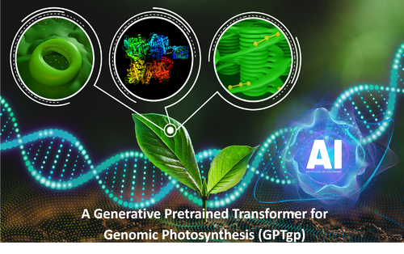

Seminar: A Generative Pretrained Transformer for Genomic Photosynthesis (GPTgp)
Event dates
– Eastern
Event details

Lianhong Gu and Mengjun Shu of Oak Ridge National Laboratory present GPTgp, an AI foundation model project connecting genomic variation with photosynthetic traits.
Overview
This Department of Energy Genesis Mission pilot combines DNA language models with biological measurements to study photosynthesis across species. The team is developing reproducible training and evaluation workflows, with attention to explainability and uncertainty, to support research into how genetic differences affect photosynthetic systems.
Speakers
Lianhong Gu, a Distinguished Scientist in ORNL’s Environmental Sciences Division, leads GPTgp and studies photosynthesis through measurement, theory, and modeling.
Mengjun Shu, an R&D Associate Staff Scientist in ORNL’s Biological Sciences Division and GPTgp co-investigator, studies the genetic basis of tree responses to environmental stress.
Read the full abstract and speaker biographies on the original event page.